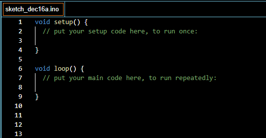

Arduino code basics
You don't know how to start coding in Arduino IDE, or just want to
learn the basics of arduino programming?
This page is for you!
Download the Arduino IDE
To program the arduino, you need a software called Arduino IDE.
You can download it from the arduino official website. I recommend downloading the latest version.
Getting started
Before you begin coding, there are a few steps you need to complete.
First of all choose your board:
Now choose the port:
{kind=link}
Start coding
Now let's start programming! (I mean, soon)
When you open the code editor, you probably see this:
{kind=link}
What does it mean?
void: It is a type of function, which doesn't have a
return value. So when we run this, it doesn't give us any
value(integer, string).
setup: This is the name of the function. It runs
once, after each powerup of the Arduino board. We usually write
things into like: pinMode() or
Serial.begin()
loop: This funtion runs continuously from the power
on to the off.
Blinking LED
We haven't done anything yet, so let's load some example code! 😊
{kind=link}
Hurray! The little LED on the arduino is blinking!
So what does the code we uploaded mean?
void setup(): We already know this.pinMode(LED_BUILTIN, OUTPUT): This is a function to
initialize a digital pin as an input or output. It has 2
parameters: pin(LED_BUILTIN; 1; 2; 3 etc.) and mode(INPUT;
OUTPUT).
void loop(): We already know this too.digitalWrite(LED_BUILTIN, HIGH): This function writes
a value to a digital pin. So voltage of the pin will be set to 5V
(or 3V) for HIGH, and 0V for LOW. It needs 2 parameters: pin and
value(LOW, HIGH).
delay(1000): This pauses all processes in the code.
It has one parameter: time (in ms).
Variables
The variables in the Arduino IDE are similar to the C++ and C variables.
We use:
int for integerschar for characters and stringsfloat for floating-point numbersdouble for double precision floating point number (it
is the same as float on AVR arduino boards)
bool for represent logical values(true or false)
Functions
Here are some frequently used functions:
pinMode(): Configures a digital pin as input or an
output
digitalWrite(): Writes a value to a digital pin (LOW
or HIGH)
digitalRead(): Reads a value from a digital pin(LOW,
HIGH)
analogWrite(): Writes an analog value to a
pin(0-255)
analogRead(): Reads the value from an analog pin
delay(): Pauses the program for a specific time(in
ms)
random(): Generates a random numberSerial.begin(): Sets the data rate in bits per second
data communication
Serial.print(): Prints data to the serial port, which
you can view on the serial monitor